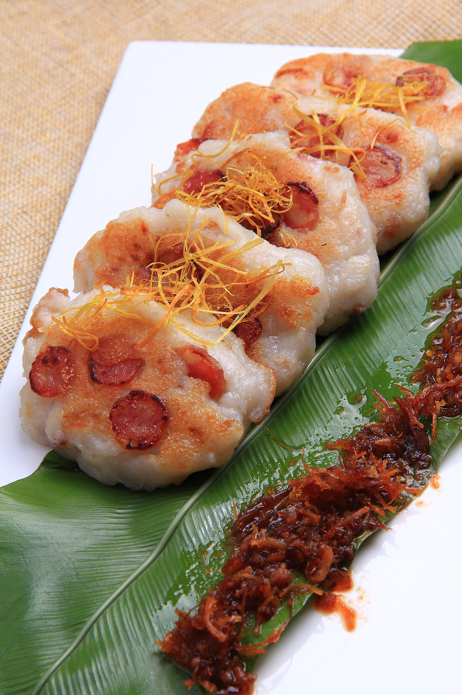

-
06-18
→ -
餐厅菜品定价的五个策略
餐厅菜品定价是一个经常让老板感到头疼的事。 菜价定高了，卖不出去，赚不到钱；菜价定低了，利润太薄，依旧赚不到钱。 餐厅菜品定价是一个经常让老板感到头疼的事。 菜价定高了，卖不出去，赚不到钱；菜价定低了，利润太薄，依旧赚不到钱。
→ - 
餐厅菜品定价是一个经常让老板感到头疼的事。 菜价定高了，卖不出去，赚不到钱；菜价定低了，利润太薄，依旧赚不到钱。 餐厅菜品定价是一个经常让老板感到头疼的事。 菜价定高了，卖不出去，赚不到钱；菜价定低了，利润太薄，依旧赚不到钱。
→